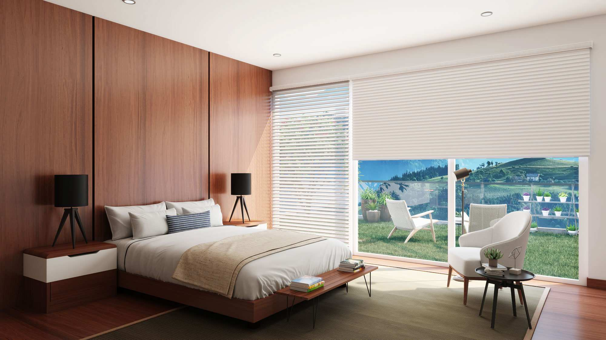
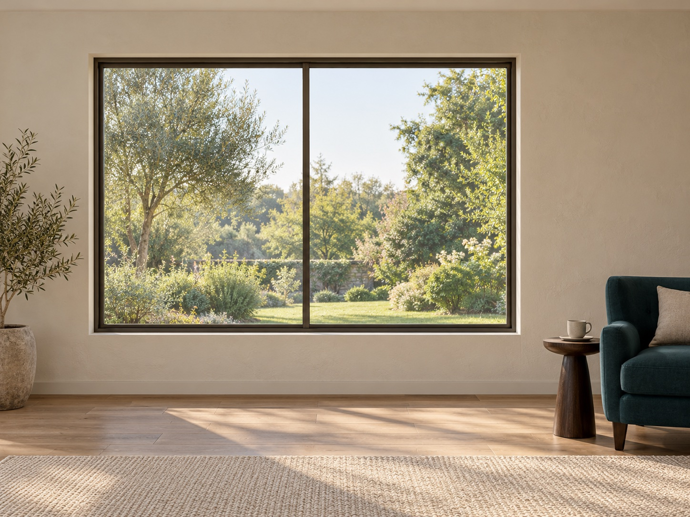
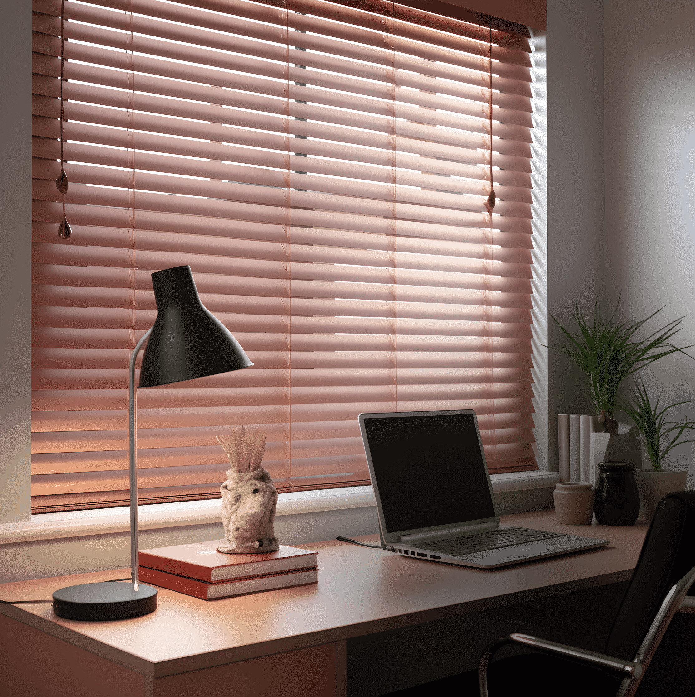
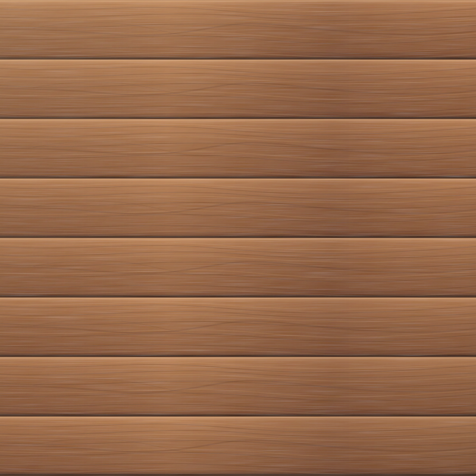
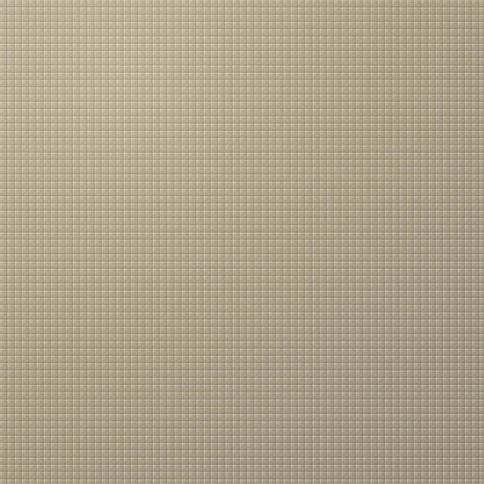
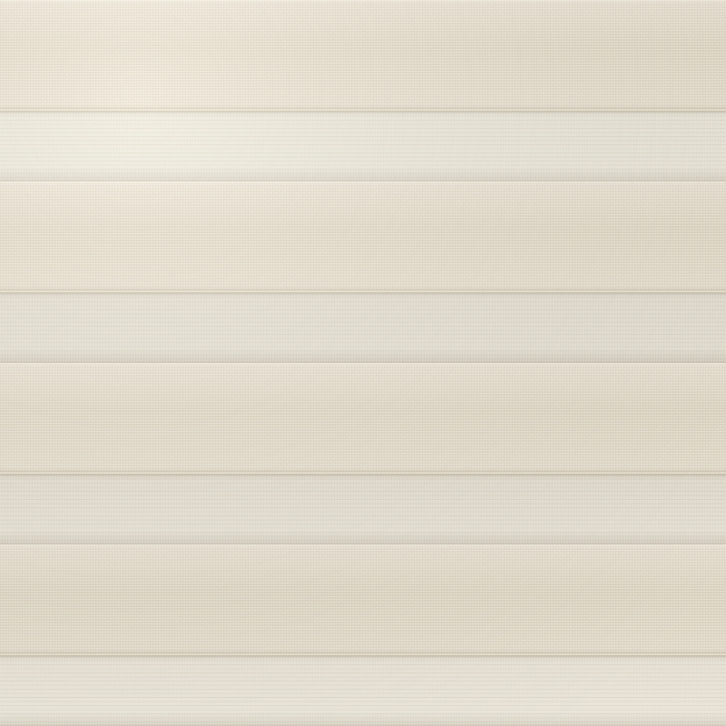

THE ART OF LIVING WITH LIGHT
Your space.
Your light.
Explore blinds, shades and curtains.
Find the right look for every room.
THE SLOW MORNING EDIT
01 / THE COLLECTION
A shade for
every room.
Compare the look. Explore the details.
Bring your favourites into one brief.
Reference room photography from Adorn. Fabric views are original illustrative studies. Confirm actual samples, specifications and suitability with your supplier.
Compare the stylesA starting point for your sample conversation
| Style | The look | Ask your supplier about |
|---|---|---|
| Solarette blinds | Layered horizontal bands | Fabric opacity and privacy as the bands align or overlap. |
| Wooden blinds | Warm tones and defined slats | Material, slat size and suitability for humid rooms. |
| Smart curtains | Soft folds and a full-height finish | Lining, motor controls and installation requirements. |
| Roller blinds | A simple, continuous surface | Indoor or outdoor rating, fabric opacity and fixing. |
A LITTLE GUIDANCE
Not sure which style feels like you?
Three quick questions. A starting point to explore.
02 / THE LIGHT STUDIO
See the difference.
Find your favourite.
Choose a style, colour and opening.
Save your look to a design brief.

YOUR SPACE. YOUR PERSPECTIVE.
One room.
Four possibilities.
AI-created room with illustrative blind overlays. Colour and daylight effects are for exploration. Confirm real samples and product suitability with your supplier.
03 / BEFORE YOU CHOOSE
A good choice
starts with samples.
A finish should feel right in your room.
Here’s what to bring to your supplier conversation.
Start with the room.
Consider the light, your privacy needs and the window dimensions.
See the real samples.
Compare colour and texture in your own daylight. Ask about opacity.
Confirm the practical details.
Check operation, measurements, room suitability and installation.

LOOK CLOSER. TEXTURE MAKES THE DIFFERENCE.


ILLUSTRATIVEMATERIAL STUDIES
THE ROOM EDIT
A room in mind?
Start there.
Choose a room to start your brief.
Reference inspiration, not past projects.
04 / YOUR DESIGN BRIEF
Your ideas.
In one brief.
Bring your room, style and colour choices together.
Download a brief for your supplier conversation.
Save a brief to your device. No enquiry is sent.
A LITTLE INSPIRATION, ALL TOGETHER
Your window
story starts here.
Your design brief is ready. Save it for a conversation with your supplier. No enquiry has been sent.
A LITTLE CLARITY
Before you
choose.
Where should I begin with choosing blinds?+
Start with the room and what you want from it: a softer view, more privacy, or a different finish. The style finder can suggest a direction. Ask a supplier to confirm fabric, operation and suitability.
How accurate is the Light Studio?+
The studio uses an AI-created room photograph with illustrative blind overlays and daylight effects. It does not predict real colour, light transmission, measurements or fabric performance. Use real samples and a site assessment for your final choice.
What happens when I create a brief?+
Your selections become a text brief you can download or copy. It stays on your device; no enquiry, email or booking is sent. This independent concept by Koushik is not connected to Adorn’s enquiry systems.